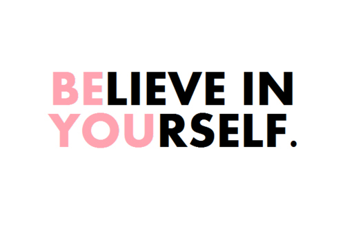

Learn how to build up the confidence to talk to people to make friends!!
Katy Perry's Roar
Here's a list of ways to try and build confidence:

Here are some of the things that I have learned in one of the classes that I have taken here at USC and from my personal experience (which is a totally reliable source) :
- Take a Deep Breath
- This is to calm your mind and help you
- Do a power stance
- This requires you to stand up on your feet and just stretch your legs out and lift your hands above your head and just stretch out and try and take up as much space as you can with your body.
- The methodology that I learned from this was that because you are making yourself seem larger, you are boosting your self-esteem
- Listen to a powerful song!!
- Listen to an upbeat/inspiring song so that you can work your confidence level up to the tempo of the song!